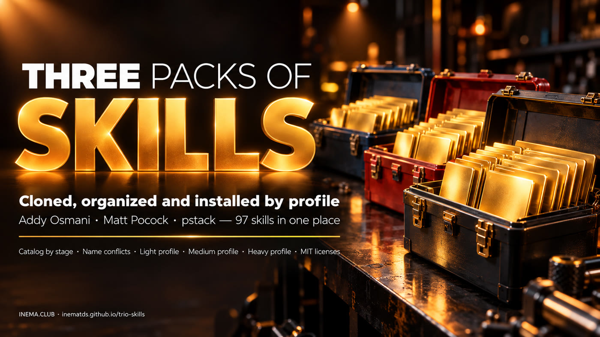

97 engineering skills for AI agents in a single repository: a catalog by stage, a duplicate-name detector and an installer that puts in only what each task needs.

trio-skills brings together in one place the three most used skill packs for coding agents: Addy Osmani's, Matt Pocock's and Lauren Tan's pstack. A skill is an instructions file that teaches the agent (Claude Code, Codex, Cursor) to work in a certain way. The project is for people who code with agents and want to use these skills without installing everything at once. It catalogs the 97 skills by work stage, shows which ones share the same name and installs a light, medium or heavy profile. To use it, all you need is Git and Python 3.
The technical video shows the anatomy of a skill, each author's pack from the inside, how to install each one and this project in use.
Each pack solves a different problem. Together, without criteria, they get in each other's way.
25 skills, 9 commands and 4 reviewers covering the whole cycle: define, plan, build, verify, review and ship.
38 small skills that align before building: grill-me (interview), to-spec, tdd, diagnosing-bugs.
A Cursor plugin. The poteto-mode router chooses among 15 playbooks and applies 20 principle skills.
A skill is a folder with a SKILL.md file. The header decides when it kicks in.
That is all the agent reads from each installed skill. The description is the trigger: “Use when…”. The body only loads when the skill is invoked.
With true, the skill only runs when you call it. The agent never triggers it on its own. grill-me and poteto-mode use this lock.
The body of grill-me has one line: call the grilling skill. That is why the light profile installs both.
# pacotes/pocock-skills/skills/productivity/grill-me/SKILL.md
---
name: grill-me
description: A relentless interview to sharpen a plan or design.
disable-model-invocation: true
---
Call the Skill tool with "grilling".
Everything copied unchanged, with the MIT license and the source commit in pacotes/*/FONTE.md.
skills/ 25 · commands/ 9 (spec, planning, build, test, review, ship…) · agents/ 4 reviewers · references/ shared checklists.
npx skills add addyosmani/agent-skills # or, in Claude Code: /plugin marketplace add addyosmani/agent-skills /plugin install agent-skills@addy-agent-skills
38 skills in engineering/, productivity/, misc/ and in-progress/ (under construction). A plugin that updates itself, or a copy through skills.sh. Never both: each skill ends up duplicated.
claude plugin install mattpocock-skills@claude-plugins-officialA Cursor plugin. /poteto-mode reads the request and picks the playbook; /setup-pstack defines which model plays each role. Outside Cursor, only through community adaptations.
/add-plugin pstack # in Cursor
/build auto runs all the tasks in sequence, but only accepts the SPEC.md at the root, in docs/ or in spec/. Without it, it stops and tells you to run /spec: it does not invent requirements.
Nothing beyond the basics. The scripts use no external library.
To clone the project (and for atualizar.sh to fetch the originals).
git --versionCatalog, conflicts and installer are plain Python.
python3 --versionClaude Code, Codex or another that reads skills from a folder (.claude/skills, ~/.agents/skills…).
claude --versionSix steps. Always run --dry-run before installing.
The three packs already come inside pacotes/, with the pinned version and the license.
git clone https://github.com/inematds/trio-skills && cd trio-skills cat pacotes/*/FONTE.md # source, commit and license of each one
It reads the header of each SKILL.md and organizes the 97 skills by stage: define, plan, build, verify, review, ship, debug, principles and routine.
python3 scripts/catalogo.py # catálogo: 97 skills ({'addy': 25, 'pocock': 38, 'pstack': 34}) → catalogo/CATALOGO.md e catalogo/catalogo.json
Same name in two skills: the agent uses one and you do not know which. With --instaladas, it also compares against your skill folders and the plugins installed in Claude Code.
python3 scripts/conflitos.py # among the 3 packs: tdd (pocock × pstack) python3 scripts/conflitos.py --instaladas # packs × your machine
leve (light) (tweak, screen, prototype): grill-me + grilling + tdd. medio (medium) (new feature): + Addy's spec, planning, incremental implementation, TDD and review, with the commands /spec /plan /build /review. pesado (heavy) (production, security, irreversible): all 25 from Addy, 9 commands and 4 reviewers. The list for each one is in perfis/.
cat perfis/medio.txt
--destino is the agent's skills folder: ./.claude/skills applies to the project only; ~/.claude/skills, to all of them. The installer does not overwrite what you already have (only with --forcar).
scripts/instalar.sh --perfil medio --destino ./.claude/skills --dry-run # shows the plan, writes nothing scripts/instalar.sh --perfil medio --destino ./.claude/skills # instalados 12, pulados 0. Reinicie o agente para ele ler as skills novas.
atualizar.sh copies again from the originals (without .git and .github) and rewrites the catalog. The tests run in a temporary folder.
scripts/atualizar.sh --conferir # is there a new version in the originals? scripts/atualizar.sh bash tests/run.sh # 18 verificações → OK
Three details that break anyone who installs by hand.
His skills point to ../../references/. Installing a single skill loses that folder (his README warns about it). Here it goes to <destino>/../references and the path resolves.
Addy's commands call agent-skills:<skill>, a name that only exists inside the plugin. Copied as loose files, the prefix is removed.
On a real machine: the context-mode plugin already ships grill-me and tdd; superpowers ships test-driven-development, the same name as Addy's.
$ python3 scripts/conflitos.py --instaladas (excerpt)
tdd ← nos pacotes
- pocock: pacotes/pocock-skills/skills/engineering/tdd
- pstack: pacotes/pstack/skills/tdd
- instalada: ~/.claude/plugins/cache/context-mode/.../skills/tdd
test-driven-development
- addy: pacotes/addy-agent-skills/skills/test-driven-development
- instalada: ~/.claude/plugins/cache/claude-plugins-official/superpowers/.../skills/test-driven-development
What exists today and what may come.
~/.agents/skills with the same checklist and command logic.